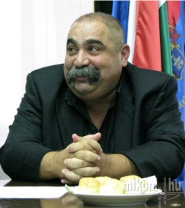

Népirtás vagy
Lakatos Attilák?
Lakatos Attila cigány
vajda Mostanra bizonyára már mindenki hallott
Lakatos Attila
cigányvajdáról, a bizonyítékról, hogy lehet valaki becsületes és igaz ember, hiába született
cigánynak. Itt most sokakat ki kell ábrándítanom, de nem vagyok fajgyûlölõ. Hihetetlen vád az
ellenségeinktõl, hogy mi bárkit is a származása miatt gyûlölünk. Nálam a következõ a fontossági
sorrend, mely alapján az embereket megkülönböztetem.
1.
Világnézet2. Faj3. NemzetÉs szentül meg
vagyok gyõzõdve róla, hogy ez a helyes. Ha mégsem, hát majd az idõ bizonyítja tévedésem. Bizony,
elsõ a világnézet, tehát hiába született valaki külföldön, egy másik faj leszármazottjaként, ha
osztja az én világnézetem, egyet ért velem és támogat, többre tartom, mint egy fehér magyart, aki
engem ellenségnek tekint. Mert az anyag sosem lehet a szellemnél feljebb való. És a nemzet sem
lehet feljebb való a fajnál, mert az csupán értelmetlen testvérháborúk sokaságát
szüli.
Lakatos Attila ezen rövid beszéde alapján cigánykérdésben az enyémhez hasonló
nézeteket vall, ezért úgy gondolom nem kell a legkisebb mértékben sem megvetnem õt származása
miatt.
Mert bátran kimondja az igazat, saját fajtájáról. Mert van hozzá mersze, hogy
kimondja az igazságot. Ehhez pedig nagy bátorság kell, hisz ellenségeink semmitõl sem félnek
annyira, mint az igazságtól, hiszen õk a hazugság nagymesterei. Mert a hazugság csak addig
életképes, míg szembe nem állítják az igazsággal. Lakatos Attila kimondta azt, amit mi már évek
óta mondunk, és amiért évek óta elmebeteg gyûlölködõknek neveznek minket.
Pedig mi jót
akarunk. Bizony, jót akarunk a cigányságnak is. Mert hiszem, hogy az Úr nem teremt népeket
azért, hogy elpusztítsák õket. Mert a mi ellenségünk nem az anyag, hanem a szellem. Az a
szellem, ami megfertõzte ellenségeinket, és amit csakis a mi szellemünk erejével gyõzhetünk le.
Ha sikerült legyõznünk a hazugságot, a téveszméket, a gonoszt, akkor megtisztul az anyag, és
újra a jó birtokába kerülhet.
Lakatos Attila egyike azoknak, aki ezért küzd. Cigánykérdés
van, mégpedig egyre súlyosbodó. Mert minden nappal, minden kirabolt, megalázott, meggyilkolt
magyarral, egyre csökken az esély a békés megoldásra. Az idõ ellenünk dolgozik. Magyarok és
cigányok ellen egyaránt. És ha lejár az idõ, mindkét oldalon rengeteg vér fog folyni. Minden
férfi keze vértõl lesz mocskos, és rengeteg anya fog fia holttestére borulni. És akkor, bizony
én is mindent meg fogok tenni, hogy ne a mi anyáink sírjanak. És ha ezt el akarjátok kerülni, a
vért, a halált, a népirtást, akkor olyan cigányokra van szükségetek, mint Lakatos Attila!
Vegyen hát róla
példát a világ összes cigánya!
Mert a származásod le nem tagadhatod, de ha az igaz utat
járod, azt elfogadtathatod.
Én Lakatos Attilát választom. Hát te cigány, te mit választasz?